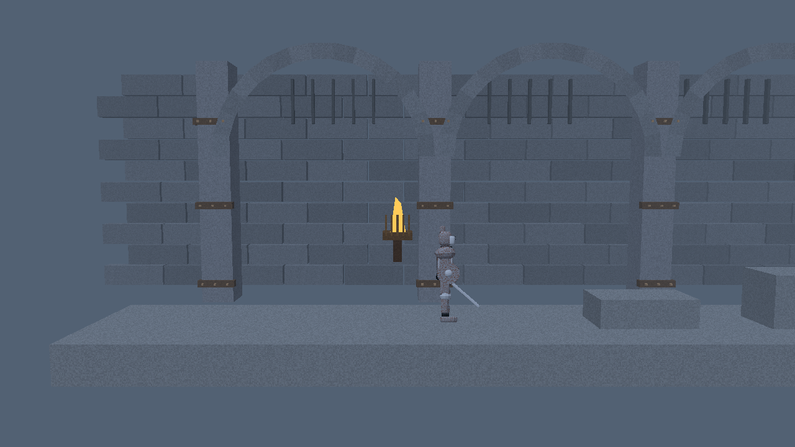
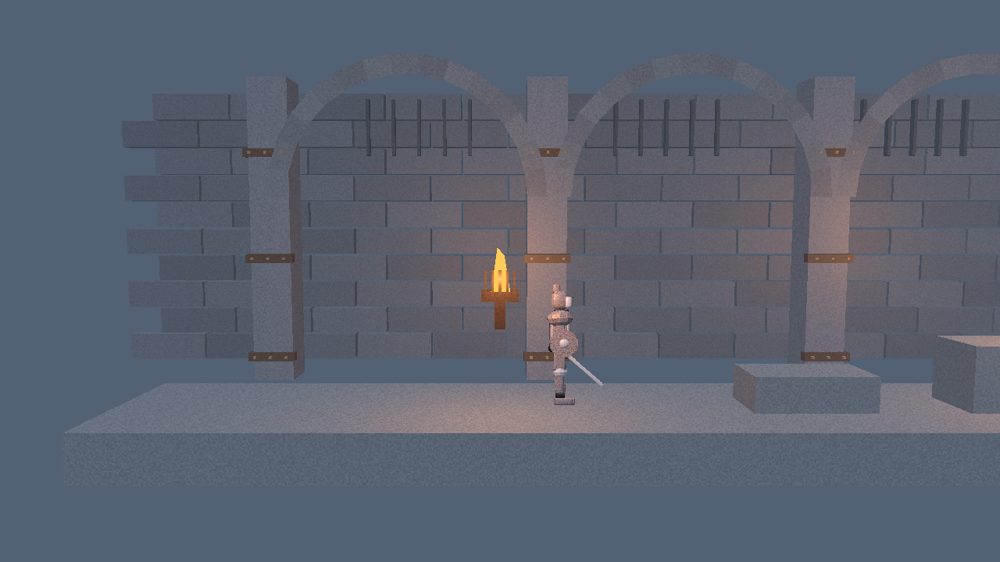
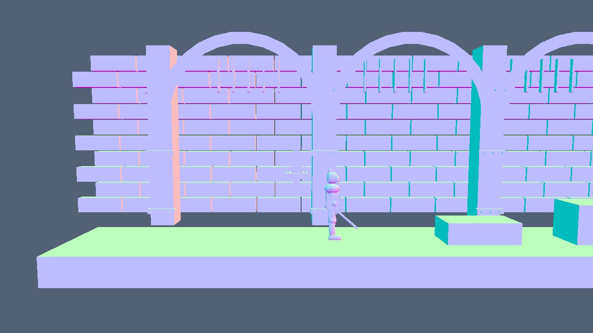
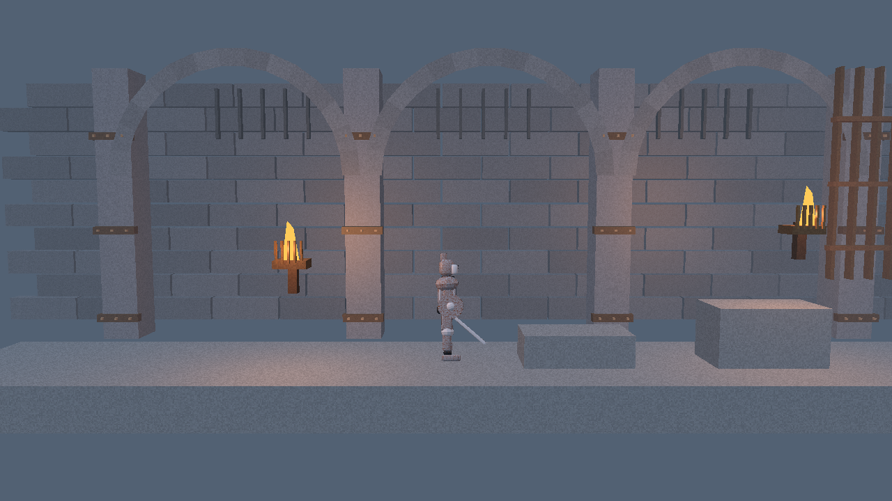
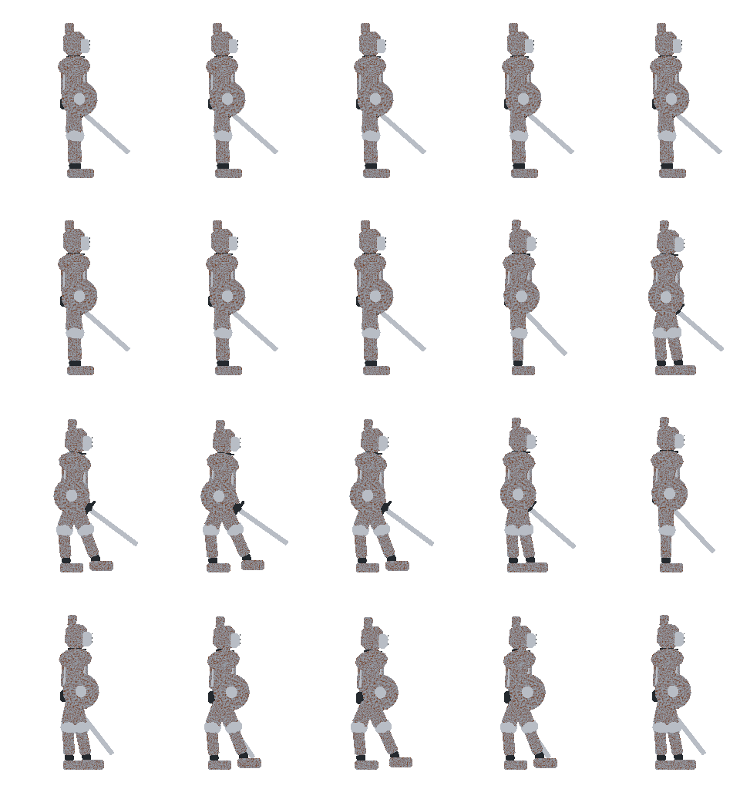
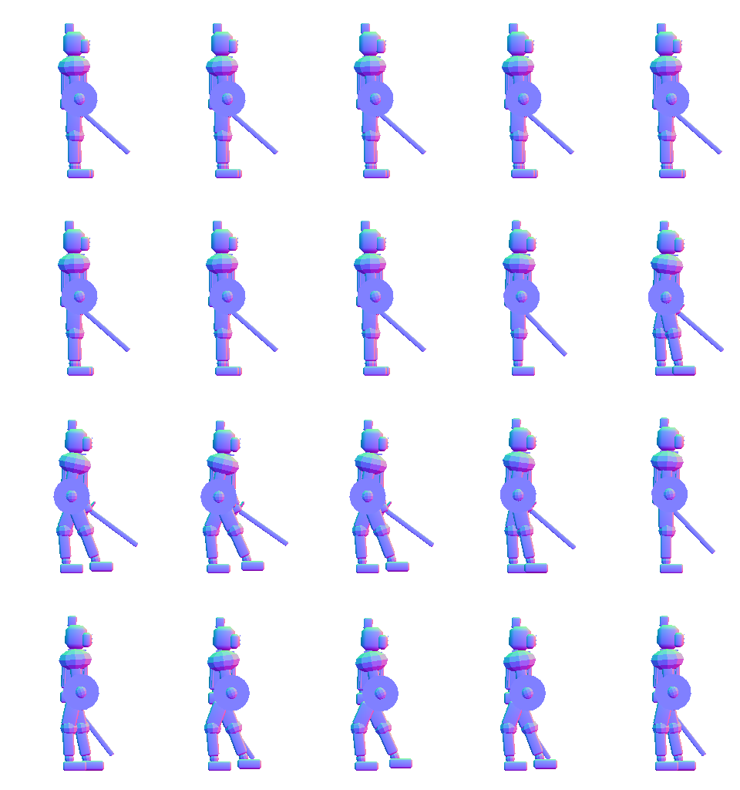

Project overview · Documentation and approved concepts
First rendering/runtime proof
20 October 2026 · Implemented and agent-verified. A native Rust renderer now runs one 3D room with a genuinely Blender-generated animated sprite, dynamic lighting, collision and an executable movement graph. Human visual review and physical input playtesting remain pending.
Technical proxies: the simple armor and room blockout test the pipeline. They do not replace the approved Penitent Harness / Corroded Bastion / L02 references. The full game and visual editor are future work.
Eight seconds through the actual runtime
Original PNG frames were rendered by the same Rust/wgpu code and shader used by the native window, then encoded once to MP4. Actions are scripted; this is GPU readback evidence rather than desktop screen recording. Playback is 20 captured frames per second; simulation runs at 120 Hz.
Download MP4 · Replay verification JSON · Native-window result
Matched torch comparison
Pose, animation frame, camera and time are identical. Only the contribution of the two torch lights changes. A sprite-only diagnostic mask excludes background pixels: 3,711 character pixels change, along with 467,757 scene pixels.






Native Windows startup

Editable source → sprite data → engine




Download editable Blender source · Sprite manifest · Sources, build/run commands and controls
The saved source was reopened in a fresh Blender 5.2.2 LTS process. Twenty sampled poses passed support-contact checks; both loop seams and the stationary global root passed. Maximum sole error was below 0.000001 m. This verifies geometry and export data, while gait aesthetics still require human review. Cycles denoising is disabled for the normal data pass.
What the graph actually owns
The JSON graph branches on jump input and grounded state, applies movement operations, selects a clip and halts. Reconnecting its grounded branch from the jump operation to animation removes jumping without recompilation. F5 validates and reloads the graph. Invalid reloads preserve the previous graph; a runtime cycle reports its node within a 128-operation budget and does not commit a partially executed tick.
Executable movement graph · Authored room/collision data
Verification and limits
| Check | Result |
|---|---|
| Machine/build | Windows 11 Pro · NVIDIA RTX 5080 · DX12 · release · 1280×720 |
| Focused tests | 6 passed: graph topology/validation/budget, collision, source-room preservation and actual exported frame/normal data |
| Native startup | 120 frames presented; bounded synthetic-input run; normal close |
| Pipeline and lighting | Editable Blender source → real atlases → animated normal-lit sprite in Rust |
| Physical inputs | Keyboard/mouse/controller mappings implemented; human device playtest pending |
| Visual acceptance | Pending. Technical armor, gait and room blockout; no shadow maps or sprite per-pixel depth |
| Performance | No FPS guarantee. Capture timing includes GPU readback and PNG encoding |
| Remaining prototype | Visual editor, full level, combat, corrosion/recovery, inventory/shop, traversal progression, forge and boss |
Next technical milestone: author rooms and graphs visually through this same runtime, with validated save/reload and playtest instances that preserve the authored sources.